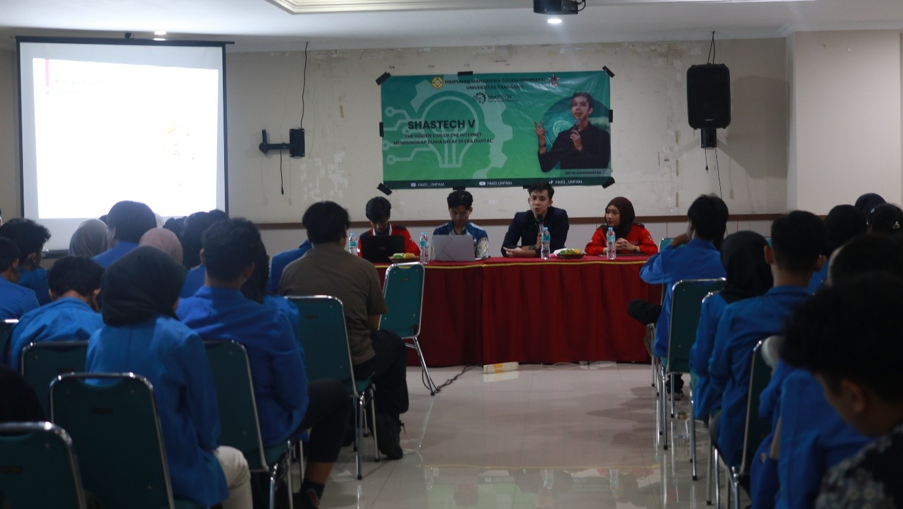
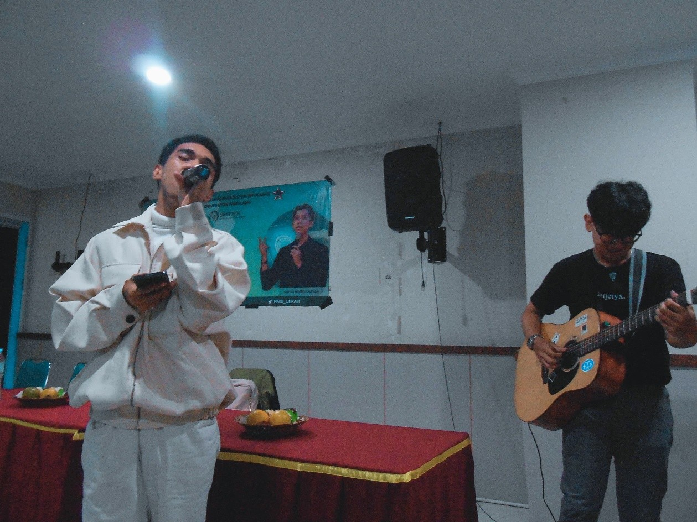

The Hidden Side of the Internet: Mengungkap Dunia Gelap di Era Digital
Dunia digital saat ini tidak hanya menyajikan kemudahan dan hiburan, tetapi juga menyimpan sisi gelap yang penuh risiko. Melalui seminar bertema “The Hidden Side of the Internet: Mengungkap Dunia Gelap di Era Digital” yang diselenggarakan pada Kamis, 5 Juni 2025 di Kampus UNPAM 2 Viktor, mahasiswa diajak membuka mata terhadap realita internet yang jarang dibahas.
Kegiatan ini merupakan inisiatif dari Bidang Pengembangan Akademik (PA) HMSI Universitas Pamulang, bekerja sama dengan komunitas LinuxHackID. Tujuan utama acara ini adalah memberikan edukasi seputar keamanan digital yang relevan dan mudah dipahami.
Dalam seminar ini, narasumber berpengalaman di bidang cyber security mengupas sisi tersembunyi dari internet—bagian yang tak terlihat di permukaan namun menyimpan berbagai aktivitas ilegal. Mahasiswa juga dikenalkan pada beragam celah keamanan, seperti serangan phishing, kebocoran data pribadi, dan pentingnya menjaga jejak digital.
Menambah semangat peserta, acara ini juga menghadirkan penampilan dari UKM Ruang Musik, menciptakan suasana santai setelah sesi materi. Tiga penanya terbaik juga mendapatkan merchandise eksklusif dari LinuxHackID.
Dengan terselenggaranya acara ini, HMSI berharap mahasiswa lebih sadar akan pentingnya menjaga privasi digital, serta mampu menjadi pengguna internet yang cerdas, waspada, dan bertanggung jawab di era teknologi yang terus berkembang.